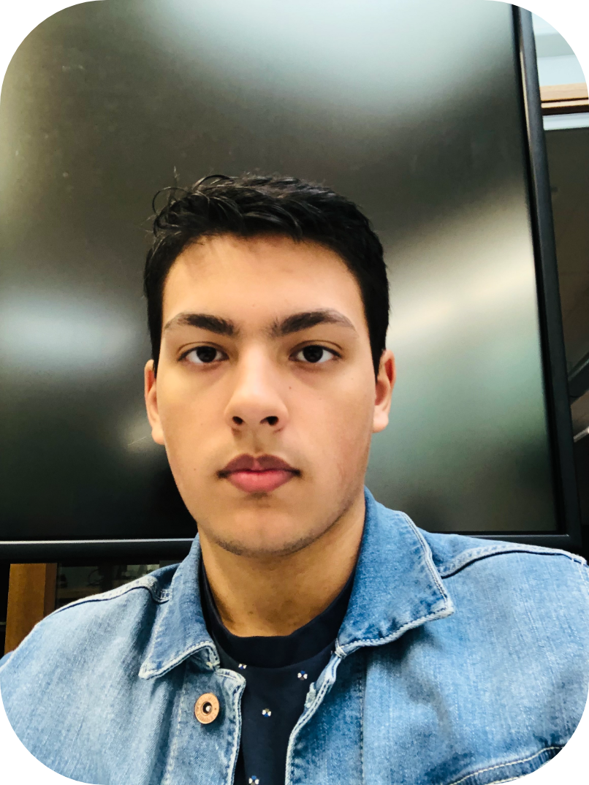
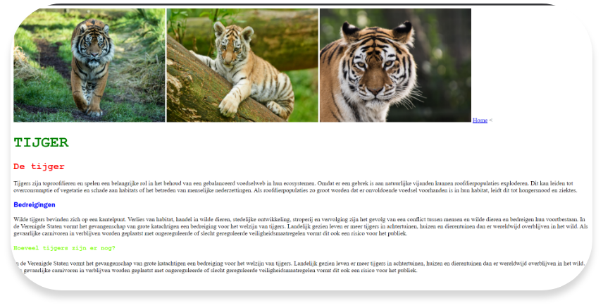

Portfolio
Josh Eerdhuijzen
over mij
opleiding
Werkervaring
Socials
Josh Eerdhuijzen
ik ben 18 jaar en ben verslaafd aan muziek. Ik ben dol op Anime kijken en verspil mijn tijd door rhythm games te
spelen. Ik heb 2 grote honden en 2 vogels, een vogel daarvan is een Ara en ik word lijp van dat geschreeuw.
opleiding
software developer
Ik zit op een software developer opleiding waar de van alles gaat conderen, van Apps naar Websites tot Games. Ik zit
hier al wat maanden op en het is wel lastig maar wel leuk als alles lukt. Het is erg veel puzzelen wat leuk kan zijn,
behalve als je er echt niet uitkomt en het voor eeuwig duurt, zowiezo als het achterelkaar gebeurt. Ik weet nog niet
precies welke richting ik ga kiezen in mijn opleiding maar dat zien we wel. Het is wel tot nu toe de beste klas waar
ik in zat, al mijn vorige waren compleet ass.
Werkervaring
Ik heb nog geen werkervaring rond software development maar wel als kok in de keuken en vakkenvuller in de appie. Kok
zijn in de keuken was wel leuk maar het was meer eten opwarmen, het was bij leger des heils. Het ware wel echt lange
dagen en was alleen op een donderdag voor 6 weken of langer.
Vakkenvullen in de appie is extreem ass, het werk
is kut en zowiezo als je een kut teamleider hebt.

